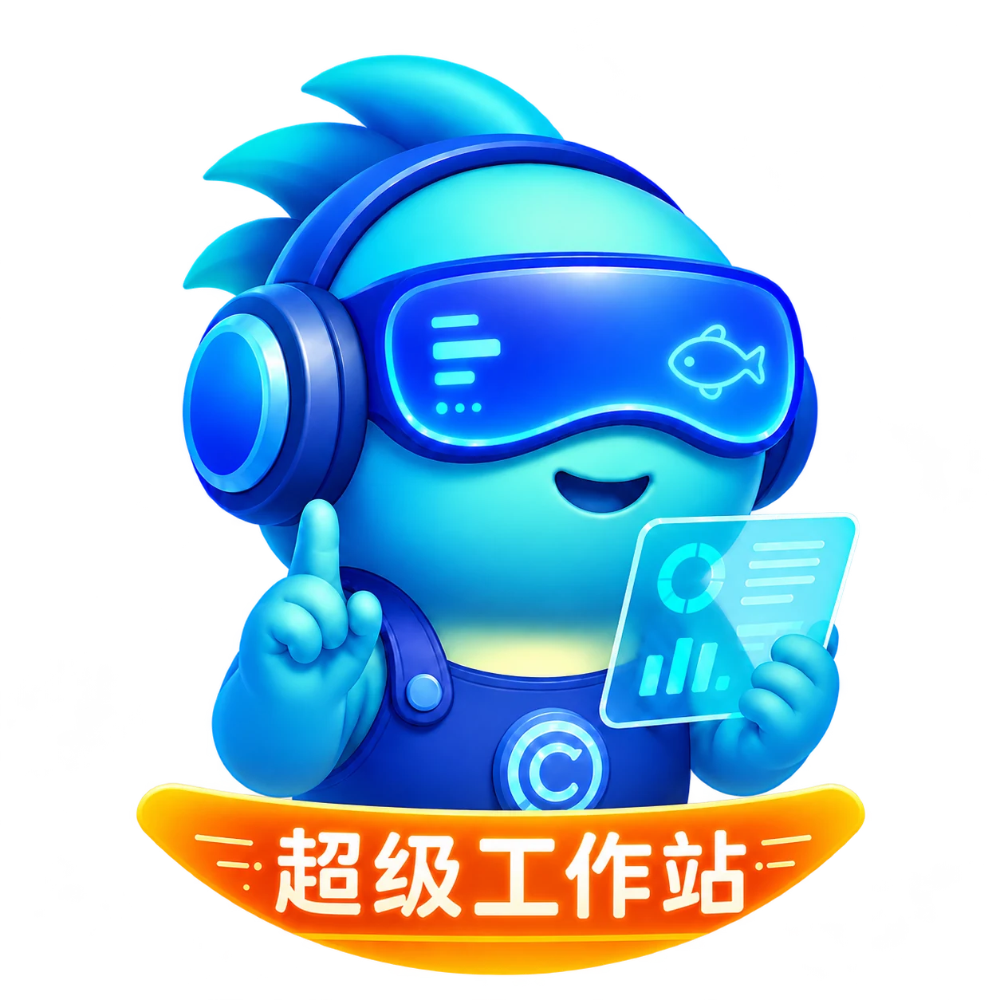
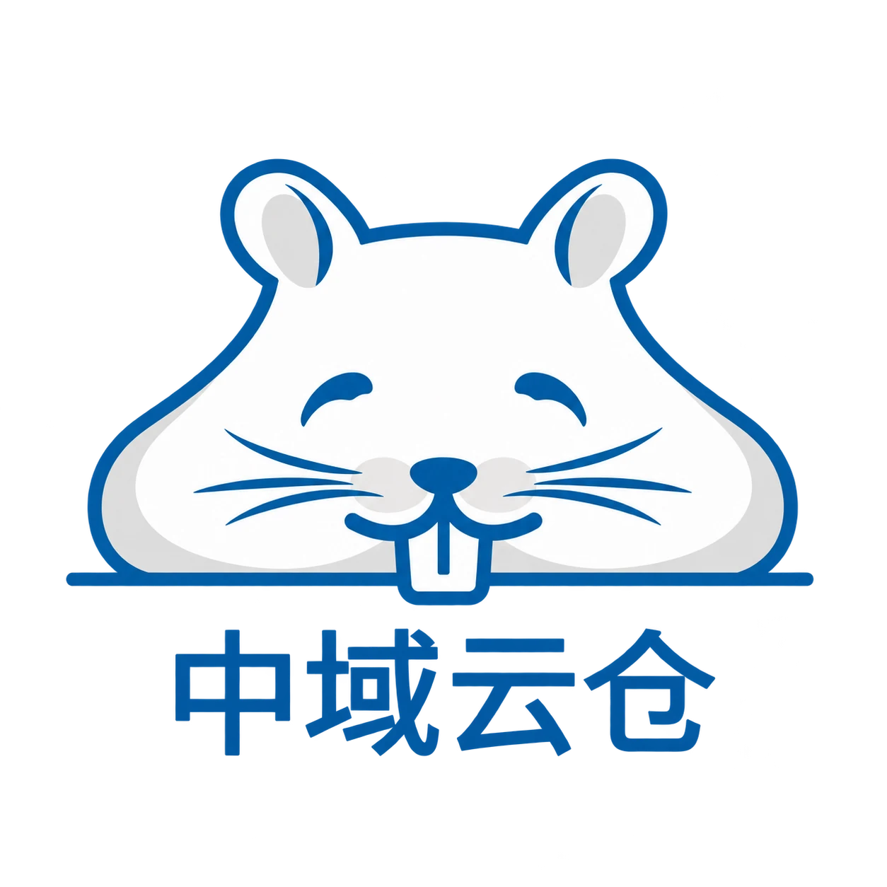
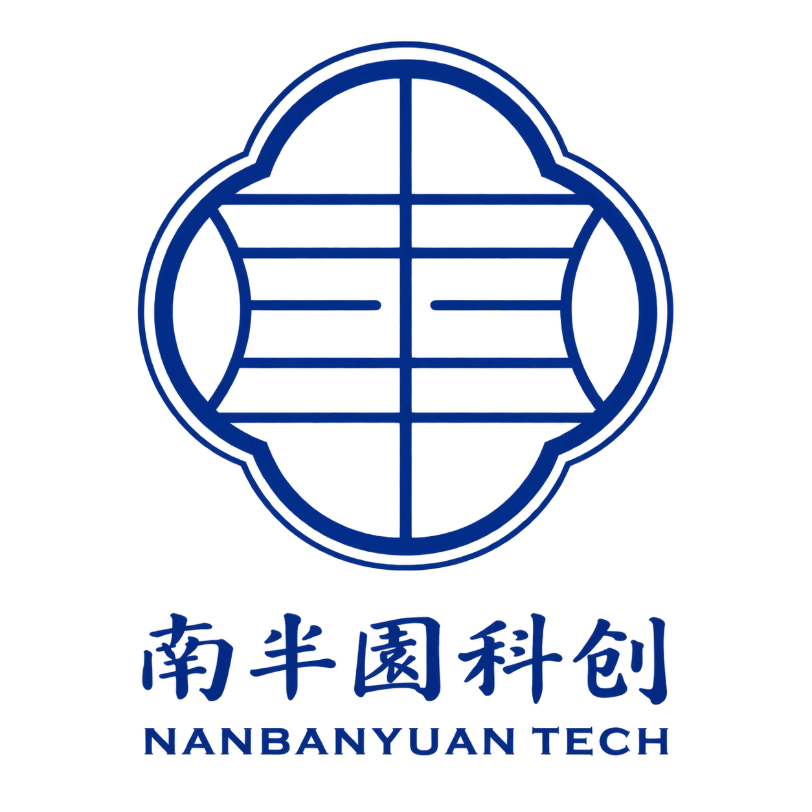
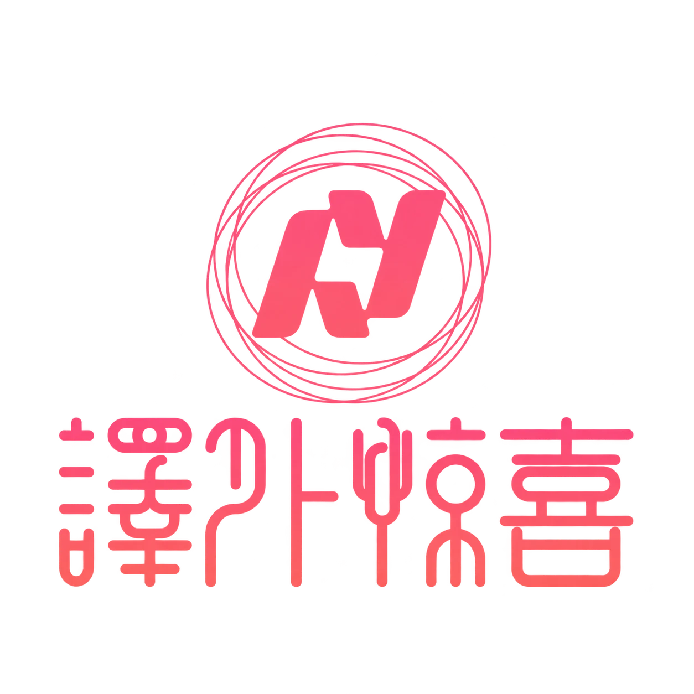
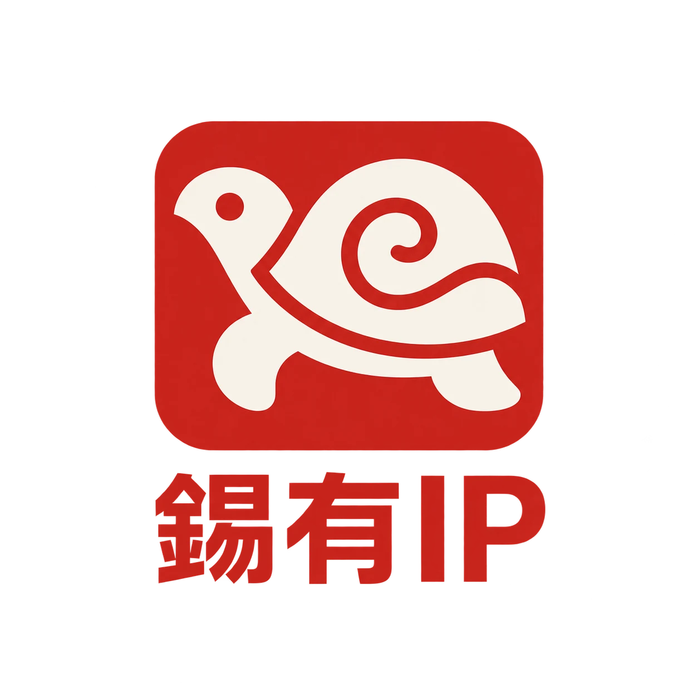

定制智能体培训工坊
用你的真实工作，学会 AI。
- 适合谁
- 企业团队、创业者与个人学习者
- 核心交付
核心交付
- 场景诊断与分级学习安排
- 智能体配置与工作流练习
- 一个可演示的实际任务成果
- 从这里开始
- 带一个想用 AI 完成的任务来。
反馈回路 用发布互动和有效咨询校准定位
反馈回路 用试点进度和结果决定下一步投入
反馈回路 用真实使用反馈调整产品范围
反馈回路 按线索质量调整渠道投入
反馈回路 用返工与超期记录定位卡点
反馈回路 从交接问题判断哪里还需要补齐
反馈回路 用异常和缺数反查采集与口径
反馈回路 用实际现金流复核假设，再调整投入
你可以来学一项能力，也可以带着一项难题来，或与我一起建设团队的工作系统。
用你的真实工作，学会 AI。
AI 落地，从一号位开始。
你的 AI 工作站，我们一起搭。
从自有工作系统到客户项目，了解问题如何被梳理，能力如何被组织。

PRACTICE / 01把智能体、知识、工具与人的协作，组织成可调用的工作系统。
查看项目实践把工业产品资料，梳理成脚本、分镜与可观看的产品短片。
查看项目实践
PRACTICE / 03围绕会展道具租赁，梳理服务场景、品牌形象与跨城仓网表达。
查看项目实践


方法、课程、项目与长期合作，都可以从这里找到入口。按需要选择，带着清单来聊。
从内容结构到页面发布，为个人或品牌建立清楚、可用的展示入口。
把已有标志与品牌方向整理为一致的视觉规则和日常应用。
把一个工作任务写清楚，建立人工基线，再设计一次可检验的 AI 协作试验。
从一个工作任务出发，练习任务拆解、文件协作与成果检查。